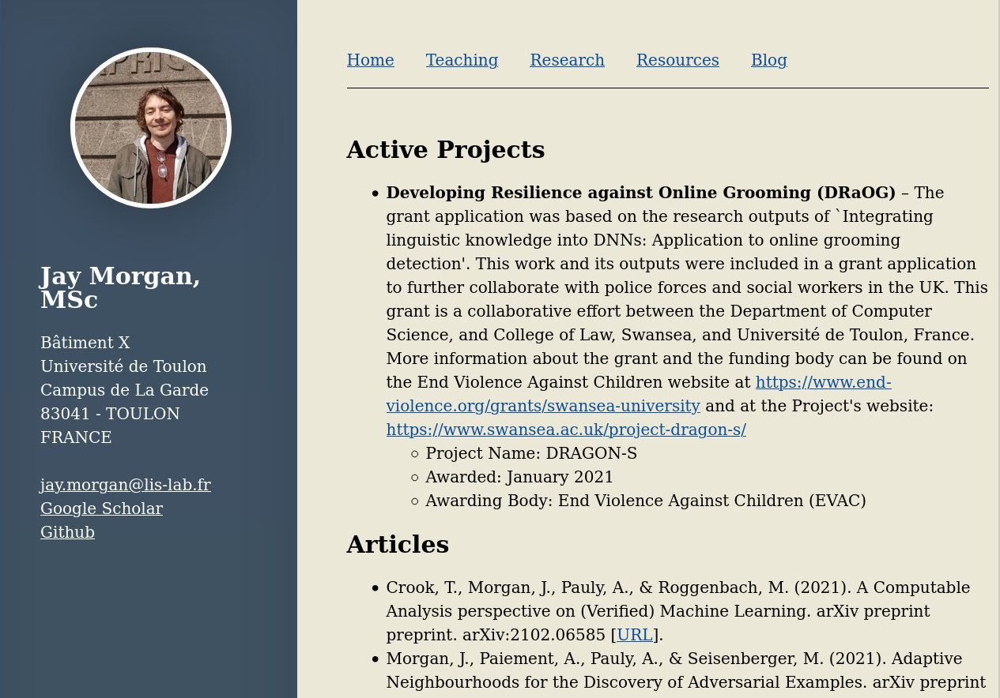

Course Introduction
Welcome to the Progamming Level-up course. In this series of lectures, we’ll be delving into the broad world of programming for research!
What…? Why…?
- Programming is much more than the act of programming a small script. Even if you’ve programmed before, doing so for a research project requires a lot of rigour to ensure the results you’re reporting are correct, and reproducible.
- There is so much surrounding the act of programming that it can get a little overwhelming. Things from setting up a programming environment to managing multiple experiments on the supercomputers can involve many languages and understanding of technologies.
- This course is designed to take you from not being able to program at all to being able to do it comfortably for your research and work.
What is this course going to teach me?
- Programming with the Python Programming Language.
- Basic syntax.
- Introduction to the basics of object oriented programming (OOP).
- Numerical computing with numpy/pandas/scipy.
- Doing your programming in a Linux-based Environment (GNU/Linux) and being comfortable with the organisation of this Linux environment.
- Setting up a research (reproducible) environment.
- Executing experiments.
- Interacting with the Super-computers/clusters.
- Interaction with SLURM (management of jobs).
- Taking the results from a program you’ve created, be able to visualise them and include them in reports/papers.
- LaTeX/Markdown.
- Plotting.
How the course will be delivered
- 2/3 hour sessions over the next 2 months.
- Throughout the lecture, there will be small exercises to try out what we’ve learnt. We will go through the answers to these exercises.
- At the end of the lecture we will have a larger exercise that will become more challenging. These exercises are not marked, but again, just an opportunity to try out what you’ve learnt. The best way to learn how to program is to program.
Rough timeline
| Lecture | Topic | Description |
|---|---|---|
| 1 | Introduction |
|
|
||
| 2 | Python classes |
|
| 3 | Project management |
|
|
||
| 4 | Programming environments |
|
|
||
| 5 | Numerical computing |
|
|
||
| 6 | Numerical computing |
|
|
||
| 7 | Basics of GNU/Linux |
|
| 8 | Bash scripting |
|
| 9 | High performance computing |
|
|
||
| 10 | Reporting |
|
|
Where to find me
My name is Dr Jay Paul Morgan. I am a researcher work on Deep Learning in Astrophysics.
- Email:
jay.morgan@univ-tln.fr - Lecture slides and other contact on my website: https://pageperso.lis-lab.fr/jay.morgan/

Proxy
Setting up a proxy in Linux – environment variables
Environment variables are variables that are set in the Linux environment and are used to configure some high-level details in Linux.
The command to create/set an environment is:
export VARIABLE_NAME=''Exporting a variable in this way will mean VARIABLE_NAME will be accessible while you’re logged in. Every time you log in you will have to set this variable again.
UNIV-TLN specific details
In the université de Toulon, you’re required to use the university’s proxy server to access the internet. Therefore, in Linux at least, you will have to tell the system where the proxy server is with an environment variable.
export HTTP_PROXY='<username>:<password>@proxy.univ-tln.fr:3128'
export HTTPS_PROXY='<username>:<password>@proxy.univ-tln.fr:3128'
export FTP_PROXY='<username>:<password>@proxy.univ-tln.fr:3128'NOTE: Watch out for special characters in your password! They will have to be URL encoded.
Setting up a proxy in the .bashrc
If you don’t wish to set the variable every time log in, you should enter the same commands into a .bashrc in your home directory.
export HTTP_PROXY='...'
export HTTPS_PROXY='...'
export FTP_PROXY='...'When you log in, the .bashrc file will be run and these variables will be set for you.